খাও
দাও
MADE FOR SHARING · BANGLADESH
একটা খাবারের পথচলা
খাবারটা বাড়তি।
যত্নটা নয়।
একজনের রান্নাঘর থেকে আরেকজনের থালা পর্যন্ত।


ভাগ করে খাই, পাশে থাকি
খাবার বাঁচাই। মানুষকে সম্মান করি।
ওয়েবসাইটে যান ↗